4 Inferential Statistics
Inferential statistics involves making predictions, generalizations, or inferences about a population based on a sample of data. These techniques are used when researchers want to draw conclusions beyond the specific data they have collected. Inferential statistics help answer questions about relationships, differences, and associations within a population.
4.1 Hypothesis Testing - Basics
Null-Hypothesis (H0) This is the default or status quo assumption. It represents the belief that there is no significant change, effect, or difference in the production process. It is often denoted as a statement of equality (e.g., the mean production rate is equal to a certain value).
alternative Hypothesis (Ha): This is the claim or statement we want to test. It represents the opposite of the null hypothesis, suggesting that there is a significant change, effect, or difference in the production process (e.g., the mean production rate is not equal to a certain value).
4.2 Statistical errors

- Type I Error (False Positive, see Figure 4.2):
A Type I error occurs when a null hypothesis that is actually true is rejected. In other words, it’s a false alarm. It is concluded that there is a significant effect or difference when there is none. The probability of committing a Type I error is denoted by the significance level \(\alpha\). Example: Imagine a drug trial where the null hypothesis is that the drug has no effect (it’s ineffective), but due to random chance, the data appears to show a significant effect, and you incorrectly conclude that the drug is effective (Type I error).
- Type II Error (False Negative, see Figure 4.2):
A Type II error occurs when a null hypothesis that is actually false is not rejected. It means failing to detect a significant effect or difference when one actually exists. The probability of committing a Type II error is denoted by the symbol \(\beta\). Example: In a criminal trial, the null hypothesis might be that the defendant is innocent, but they are actually guilty. If the jury fails to find enough evidence to convict the guilty person, it is a Type II error.
Type I Error is falsely concluding, that there is an effect or difference when there is none (false positive). Type II Error failing to conclude that there is an effect or difference when there actually is one (false negative).
The relationship between Type I and Type II errors is often described as a trade-off. As the risk of Type I errors is reduced by lowering the significance level (\(\alpha\)), the risk of Type II errors (\(\beta\)) is typically increased (Figure 4.3). This trade-off is inherent in hypothesis testing, and the choice of significance level depends on the specific goals and context of the study. Researchers often aim to strike a balance between these two types of errors based on the consequences and costs associated with each. This balance is a critical aspect of the design and interpretation of statistical tests.
4.3 Significance
The p-value is a statistical measure that quantifies the evidence against a null hypothesis. It represents the probability of obtaining test results as extreme or more extreme than the ones observed, assuming the null hypothesis is true. In hypothesis testing, a smaller p-value indicates stronger evidence against the null hypothesis. If the p-value is less than or equal to \(\alpha\) (\(p \leq \alpha\)), you reject the null hypothesis. If the p-value is greater than \(\alpha\) ( \(p > \alpha\) ), you fail to reject the null hypothesis. A common threshold for determining statistical significance is to reject the null hypothesis when \(p\leq\alpha\).
The p-value however does not give an assumption about the effect size, which can be quite insignificant (Nuzzo 2014). While the p-value therefore is the probability of accepting \(H_a\) as true, it is not a measure of magnitude or relative importance of an effect. Therefore the CI and the effect size should always be reported with a p-value. Some Researchers even claim that most of the research today is false (Ioannidis 2005). In practice, especially in the manufacturing industry, the p-value and its use is still popular. Before implementing any measures in a series production, those questions will be asked. The confident and reliable engineer asks them beforehand and is always his own greatest critique.
4.3.1 The drive shaft exercise - Hypotheses
During the Quality Control (QC) of the drive shaft \(n=100\) samples are taken and the diameter is measured with an accuracy of \(\pm 0.01mm\). Is the true mean of all produced drive shafts within the specification?
For this we can formulate the hypotheses.
- H0
- The drive shaft diameter is within the specification.
- Ha:
- The drive shaft diameter is not within the specification.
In the following we will explore, how to test for these hypotheses.
4.4 Confidence Interval (CI)
A CI is a statistical concept used to estimate a range of values within which a population parameter, such as a population mean or proportion, is likely to fall. It provides a way to express the uncertainty or variability in our sample data when making inferences about the population. In other words, it quantifies the level of confidence we have in our estimate of a population parameter.
Confidence intervals are typically expressed as a range with an associated confidence level. The confidence level, often denoted as \(1-\alpha\), represents the probability that the calculated interval contains the true population parameter. Common confidence levels include \(90\%\), \(95\%\), and \(99\%\).
There are different ways of calculating CI).
- For the population mean \(\mu_0\) when the population standard deviation \(\sigma_0^2\) is known (\(\eqref{ci01}\)).
\[\begin{align} CI = \bar{X} \pm t \frac{\sigma_0}{\sqrt{n}} \label{ci01} \end{align}\]
\(\bar{X}\) is the sample mean.
\(Z\) is the critical value from the standard normal distribution corresponding to the desired confidence level (e.g., \(1.96\) for a \(95\%\) confidence interval).
\(\sigma_0\) is the populations standard deviation
\(n\) is the sample size
2.For the population mean \(\mu_0\) when the population standard deviation \(\sigma_0^2\) is unknown (t-confidence interval), see \(\eqref{ci02}\).
\[\begin{align} CI = \bar{X} \pm t \frac{sd}{\sqrt{n}} \label{ci02} \end{align}\]
\(\bar{X}\) is the sample mean.
\(t\) is the critical value from the t-distribution with \(n-1\) degrees of freedom corresponding to the desired confidence level
\(sd\) is the sample standard deviation
\(n\) is the sample size
- For a population proportion p, see \(\eqref{ci03}\).
\[\begin{align} CI = \hat{p} \pm Z \sqrt{\frac{\hat{p}(1-\hat{p})}{n}} \label{ci03} \end{align}\]
\(\hat{p}\) is the sample proportion
\(Z\) is the critical value from the standard normal distribution corresponding to the desired confidence level
\(n\) is the sample size
- The method for calculating confidence intervals may vary depending on the estimated parameter. Estimating a population median or the differences between two population means, other statistical techniques may be used.

4.4.1 Some basics
\[\begin{align} P(L \leq \theta \leq U) = 1- \alpha \end{align}\]
… with \(L\) and \(U\) being computed from sample data.
A \(95\%\) CI for the population mean \(\mu_0\) implies that if we repeated the sampling process infinitely, \(95\%\) of the computed intervals would contain \(\mu\).
4.4.2 Components of a CI
- Point Estimate: The sample statistic (\(\bar{x},\hat{p}\))
- Standard Error (SE): Measures the variability of the point estimate
- Critical Value: Derived from the sampling distribution
- Margin of Error (ME): \(ME = \text{Critical Value} \times SE\)
\[\begin{align} \text{CI} = \text{Point Estimate} \pm \text{ME} \end{align}\]
4.4.3 The drive shaft exercise - Confidence Intervals
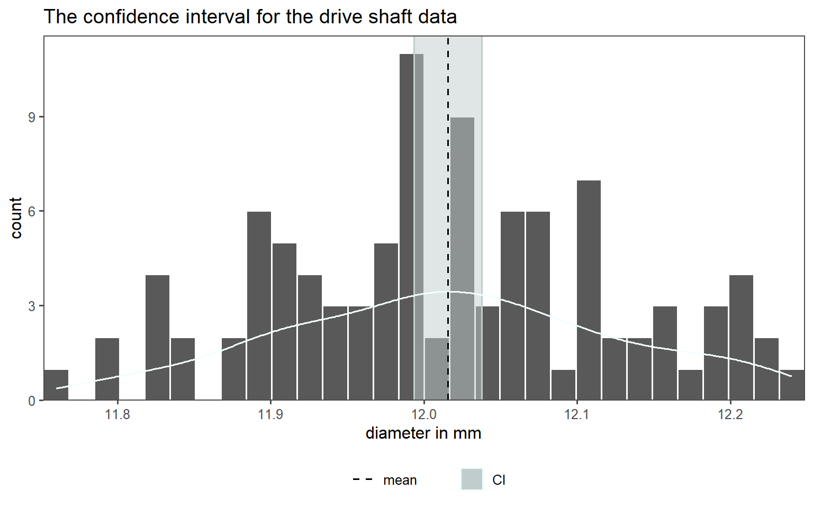
The \(95\%\) CI for the drive shaft data is shown in Figure 4.5. For comparison the histogram with an overlayed density curve is plotted. The highlighted area shows the minimum and maximum CI, the calculated mean is shown as a dashed line.
4.5 Significance Level
The significance level \(\alpha\) is a critical component of hypothesis testing in statistics. It represents the maximum acceptable probability of making a Type I error, which is the error of rejecting a null hypothesis when it is actually true. In other words, \(\alpha\) is the probability of concluding that there is an effect or relationship when there isn’t one. Commonly used significance levels include \(0.05 (5\%)\), \(0.01 (1\%)\), and \(0.10 (10\%)\). The choice of \(\alpha\) depends on the context of the study and the desired balance between making correct decisions and minimizing the risk of Type I errors.
4.6 False negative - risk
The risk for a false negative outcome is called \(\beta\) - risk. Is is calculated using statistical power analysis. Statistical power is the probability of correctly rejecting a null hypothesis when it is false, which is essentially the complement of beta (\(\beta\)).
\[\begin{align} \beta = 1 - \text{Power} \end{align}\]
4.7 Power Analysis
Statistical power is calculated using software, statistical tables, or calculators specifically designed for this purpose. Generally speaking: The greater the statistical power, the greater is the evidence to accept or reject the \(H_0\) based on the study. Power analysis is also very useful in determining the sample size before the actualy experiments are conducted. Below is an example for a power calculation for a two-sample t-test.
\[ \text{Power} = 1 - \beta = P\left(\frac{{|\bar{X}_1 - \bar{X}_2|}}{\sqrt{\frac{S_1^2}{n_1} + \frac{S_2^2}{n_2}}} > Z_{\frac{\alpha}{2}} - \frac{\delta}{\sqrt{\frac{S_1^2}{n_1} + \frac{S_2^2}{n_2}}}\right) \]
Effect Size: This represents the magnitude of the effect you want to detect. Larger effects are easier to detect than smaller ones.
Significance Level (\(\alpha\)): This is the predetermined level of significance that defines how confident you want to be in rejecting the null hypothesis (e.g., typically set at 0.05).
Sample Size (\(n\)): The number of observations or participants in your study. Increasing the sample size generally increases the power of the test.
Power (\(1 - \beta\)): This is the probability of correctly rejecting the null hypothesis when it is false. Higher power is desirable, as it minimizes the chances of a Type II error (failing to detect a true effect).
Type I Error (\(\alpha\)): The probability of incorrectly rejecting the null hypothesis when it is true. This is typically set at \(0.05\) or \(5\%\) in most studies.
Type II Error (\(\beta\)): The probability of failing to reject the null hypothesis when it is false. Power is the complement of \(\beta\) (\(Power = 1 - \beta\)).
4.7.1 Why Power analysis
- How large should a sample be?
- What’s the probability my experiment will succeed (as in reject \(H_0\) when \(H_0\) is false)
- Is my study even worth running given the effect size I expect
4.7.2 Power defined
Power = Probability of rejecting \(H_0\) when \(H_a\) is true.
Mathematically:
\[\begin{align} \text{Power} = P(\text{Reject }H_0|H_1 \text{ is true}) = 1 -\beta \end{align}\]
- Significance level (\(\alpha\)): Threshold for rejecting \(H_0\) (e.g. \(0.05\))
- Effect Size: For the Coin Toss example \(p = 0.6\) vs. \(p = 0.5\)
- Sample Size (\(n\))
4.7.3 Power and \(\beta\) error
The sample size \(n = 23\), meaning \(23\) coin flips means that the statistical power is \(80\%\) at a \(\alpha = 0.05\) significance level (\(\beta = 1-power = 0.2 \approx 20\%\)). But what if the sample size varies? This is the subject of Figure 4.7. On the x-axis the power is shown (or the \(\beta\)-risk on the upper x-axis), whereas the sample size n is depicted on the y-axis. To increase the power by \(10\%\) to be \(90\%\) the sample sized must be increased by \(11\). A further power increase of \(5\%\) would in turn mean an increase in sample size to be \(n = 40\). This highlights the non-linear nature of power calculations and why they are important for experimental planning.
4.7.4 Example: The Coin Toss

Define \(H_0\) and \(H_a\)
H0: The coin is fair and lands heads \(50\%\) of the time.
Ha: The coin is loaded and lands heads more than \(50\%\) of the time.
Power computation for \(n = 10,20,30,50\) with \(\alpha = 0.05\)
Define the test statistic
For a binomial test, the test statistic is the number of head \(X\) under \(H_0\), \(X \sim \text{Binomial}(n,0.5)\)
Critical Value
Reject \(H_0\) if \(x\geq c\), where \(c\) is the smallest integer such that
\[P(X\geq c) | H_0) \leq \alpha\]
Power calculation
\[\text{Power} = P(X\geq c|H_1)\]
4.7.4.1 Power calculations in this example
- The critical value is the smallest integer where \(P(X\geq c)\leq \alpha\)
- For \(n = 10\) and \(\alpha = 0.05\)
qbinom(0.95,10,0.5)returns \(8\), meaning we would reject \(H_0\) if there are 8 or more heads in 10 flips
- For \(n = 10\) and \(\alpha = 0.05\)
4.7.4.1.1 Power is the probability of observing \(X\geq c\) under \(H_1\)
pbinom(c-1,n,p_h1)computes \(P(X\leq c-1 |H_1)\)1-pbinom(...)gives \(P(X\geq c | H_1)\)- \(n=10\), \(c = 8\) and \(p_{H1} = 0.6\):
1-pbinom(7,10,0.6) =0.1672898
4.7.5 Using packages
pwr::pwr.p.test(h = pwr::ES.h(p1 = 0.6, p2 = 0.50),
sig.level = 0.05,
power = 0.80,
alternative = "greater")
proportion power calculation for binomial distribution (arcsine transformation)
h = 0.2013579
n = 152.4863
sig.level = 0.05
power = 0.8
alternative = greater4.7.6 Power vs. sample size

4.7.7 Power and the different parameters
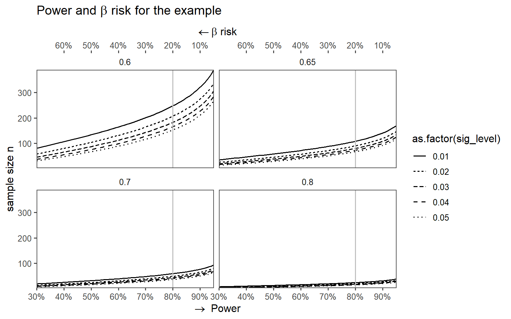
4.8 Effect Sizes
After computing statistical power, we must ask: “How meaningful is the effect we’re powered to detect?” Effect sizes quantify the magnitude of a phenomenon—separate from sample size or significance.
4.8.1 What is an effect size?
- A standardized measure of the strength of a relationship or difference.
- Answers: “How large is the effect in the population?” (not just “Is it nonzero?”).
- Key Property: Independent of sample size (unlike p-values).
Analogy: Power tells you if your telescope is strong enough to see a star (significance). Effect size tells you how bright the star is (meaningfulness).
4.8.2 Types of effect sizes
| Common Effect Size Metrics in Statistical Analysis | |||
| Interpretation guidelines and tidyverse functions | |||
| Analysis Type | Common Effect Size Metric | Interpretation | R Function (tidyverse) |
|---|---|---|---|
| Mean Difference | Cohen’s d | Small: 0.2, Medium: 0.5, Large: 0.8 | effectsize::cohen_d() |
| Correlation | Pearson’s r | Small: 0.1, Medium: 0.3, Large: 0.5 | correlation::correlation() |
| Binary Outcome | Odds Ratio (OR) / Risk Ratio (RR) | OR = 2: 2x higher odds in group A | effectsize::odds_ratio() |
| ANOVA (Group Diffs) | Eta-squared (η²) / Omega-squared (ω²) | Proportion of variance explained | effectsize::eta_squared() |
| Regression | Standardized β (beta) | Change in SD units per 1-SD predictor change | parameters::standardize_parameters() |
4.8.3 Computing effect sizes in R
# Simulate data: Treatment vs. Control
set.seed(123)
data_effect <- tibble(
group = rep(c("Treatment", "Control"), each = 50),
score = c(rnorm(50, mean = 85, sd = 10), rnorm(50, mean = 80, sd = 10))
)
# Compute Cohen's d (correct formula syntax)
effectsize::cohens_d(score ~ group, data = data_effect) Cohen's d | 95% CI
--------------------------
-0.42 | [-0.82, -0.03]
- Estimated using pooled SD.4.8.4 Visualization

4.8.5 Simple example
- Old process: \(\text{Mean diameter:}\;10.02mm,\; sd = 0.1mm\;(n = 50)\)
- New process: \(\text{Mean diameter:}\;10.00mm,\; sd = 0.05mm\;(n = 50)\)
What is the effect size (\(d\)) of changing to the new process
4.8.6 Visualizations

4.8.7 Calculate Cohens \(d\) (Mean Difference)
\[\begin{align} d = \frac{\bar{x}_{new}-\bar{x}_{old}}{sd_{pooled}} \end{align}\]
Pooled sd:
\[\begin{align} sd_{pooled} = \sqrt{\frac{(n_1-1)sd_{1}^2+(n_2-1)sd_{2}^2}{n_1+n_2-1}}\approx 0.076 \end{align}\]
Effect Size (\(d\)):
\[d = \frac{10.00-10.02}{0.076} = \frac{-0.02}{0.076}\approx -0.26\]
4.9 Parametric and Non-parametric Tests
Parametric and non-parametric tests in statistics are methods used for analyzing data. The primary difference between them lies in the assumptions they make about the underlying data distribution:
- Parametric Tests:
- These tests assume that the data follows a specific probability distribution, often the normal distribution.
- Parametric tests make assumptions about population parameters like means and variances.
- They are more powerful when the data truly follows the assumed distribution.
- Examples of parametric tests include t-tests, ANOVA, regression analysis, and parametric correlation tests.
- Non-Parametric Tests:
- Non-parametric tests make minimal or no assumptions about the shape of the population distribution.
- They are more robust and can be used when data deviates from a normal distribution or when dealing with ordinal or nominal data.
- Non-parametric tests are generally less powerful compared to parametric tests but can be more reliable in certain situations.
- Examples of non-parametric tests include the Mann-Whitney U test, Wilcoxon signed-rank test, Kruskal-Wallis test, and Spearman’s rank correlation.
The choice between parametric and non-parametric tests depends on the nature of the data and the assumptions. Parametric tests are appropriate when data follows the assumed distribution, while non-parametric tests are suitable when dealing with non-normally distributed data or ordinal data. Some examples for parametric and non-parametric tests are given in Table 4.2.
| Parametric Tests | Non-Parametric Tests |
|---|---|
| One-sample t-test | Wilcoxon signed rank test |
| Paired t-test | Mann-Whitney U test |
| Two-sample t-test | Kruskal Wallis test |
| One-Way ANOVA | Welch Test |
4.9.1 Ranks
A rank is a position of a data point when sorted in ascending/descending order.
Ties are handled using the average rank (two 3rd places, both get ranked \(3.5\))
- Data:
[5,2,8,2,10] - Sorted:
[2,2,5,8,10] - Ranks:
[2,2,3,4,5] - Ranks with ties:
[1.5,1.5,3,4,5]
4.9.2 Why ranks for non-parametric tests
Invariance to Monotonic Transformations: Ranks preserve order, so log/root transformations do not change them
Focus on relative Differences: Tests like Wilcoxon (rank-sum) or Kruskal-Wallis compare ranks distributions across groups
Exact p-values per Permutation: Ranks allow exact tests by enumerating all possible rank orderings (for small samples)
4.9.3 Common Pitfalls and Misconceptions
Loss of Information: Ranks discard magnitude, a trade-off for robustness
Ties Reduce Power: Many ties weaken tests
Not “Assumption-Free”: Nonpaeametric \(\neq\) no assumptions (independence, distribution shapes)
4.9.3.1 Exercise on ranks
| group | time |
|---|---|
| A | 12.3 |
| A | 10.1 |
| B | 14.0 |
| B | 13.2 |
| A | 10.1 |
| B | 15.5 |
| A | 11.8 |
| B | 13.2 |
4.9.3.2 Sort the data
| group | time | sorted_position |
|---|---|---|
| A | 10.1 | 1 |
| A | 10.1 | 2 |
| A | 11.8 | 3 |
| A | 12.3 | 4 |
| B | 13.2 | 5 |
| B | 13.2 | 6 |
| B | 14.0 | 7 |
| B | 15.5 | 8 |
4.9.3.3 Assign Ranks
| group | time | rank |
|---|---|---|
| A | 10.1 | 1.5 |
| A | 10.1 | 1.5 |
| A | 11.8 | 3.0 |
| A | 12.3 | 4.0 |
| B | 13.2 | 5.5 |
| B | 13.2 | 5.5 |
| B | 14.0 | 7.0 |
| B | 15.5 | 8.0 |
4.9.3.4 Sum of ranks
| group | sum_rank | count | mean_rank |
|---|---|---|---|
| A | 10 | 4 | 2.5 |
| B | 26 | 4 | 6.5 |
4.10 Paired and Independent Tests

- Paired Statistical Test:
- Paired tests are used when there is a natural pairing or connection between two sets of data points. This pairing is often due to repeated measurements on the same subjects or entities.
- They are designed to assess the difference between two related samples, such as before and after measurements on the same group of individuals.
- The key idea is to reduce variability by considering the differences within each pair, which can increase the test sensitivity.
- Independent Statistical Test:
- Independent tests, also known as unpaired or two-sample tests, are used when there is no inherent pairing between the two sets of data.
- These tests are typically applied to compare two separate and unrelated groups or samples.
- They assume that the data in each group is independent of the other, meaning that the value in one group doesn’t affect the value in the other group.
An example for a paired test is, if two groups of data are to be compared in two different points in time (see Figure 4.11).
4.11 Distribution Tests
The importance of testing for normality (or other distributions) lies in the fact that various statistical techniques, such as parametric tests (e.g., t-tests, ANOVA), are based on the assumption of for example normality. When data deviates significantly from a normal distribution, using these parametric methods can lead to incorrect conclusions and biased results. Therefore, it is essential to determine how a dataset is approximately distributed before applying such techniques.
Several tests for normality are available, with the most common ones being the Kolmogorov-Smirnov test, the Shapiro-Wilk test, and the Anderson-Darling test. These tests provide a quantitative measure of how well the data conforms to a normal distribution.
In practice, it is important to interpret the results of these tests cautiously. Sometimes, a minor departure from normality may not affect the validity of parametric tests, especially when the sample size is large. In such cases, using non-parametric methods may be an alternative. However, in cases where normality assumptions are crucial, transformations of the data or choosing appropriate non-parametric tests may be necessary to ensure the reliability of statistical analyses.
Tests for normality do not free you from the burden of thinking for yourself.
4.11.1 Quantile-Quantile plots
Quantile-Quantile plots are a graphical tool used in statistics to assess whether a dataset follows a particular theoretical distribution, typically the normal distribution. They provide a visual comparison between the observed quantiles1 of the data and the quantiles expected from the chosen theoretical distribution.
A neutral explanation of how QQ plots work:
4.11.1.1 Sample data
In Table 4.7 \(n=10\) datapoints are shown as a sample dataset.
| sample_data |
|---|
| 3 |
| 1 |
| 5 |
| 2 |
| 4 |
4.11.1.2 Data Sorting
To create a QQ plot, the data must be sorted in ascending order.
| sample_data |
|---|
| 1 |
| 2 |
| 3 |
| 4 |
| 5 |
4.11.1.3 Empirical Quantiles
Theoretical quantiles are calculated based on the chosen distribution (e.g., the normal distribution). These quantiles represent the expected values if the data perfectly follows that distribution.
| sample_data | sample_data_emp_prob |
|---|---|
| 1 | 0.1 |
| 2 | 0.3 |
| 3 | 0.5 |
| 4 | 0.7 |
| 5 | 0.9 |
4.11.1.4 Theoretical Quantiles
| sample_data | sample_data_emp_prob | quant_theo |
|---|---|---|
| 1 | 0.1 | 0.9736891 |
| 2 | 0.3 | 2.1708500 |
| 3 | 0.5 | 3.0000000 |
| 4 | 0.7 | 3.8291500 |
| 5 | 0.9 | 5.0263109 |
4.11.1.5 Plotting Points
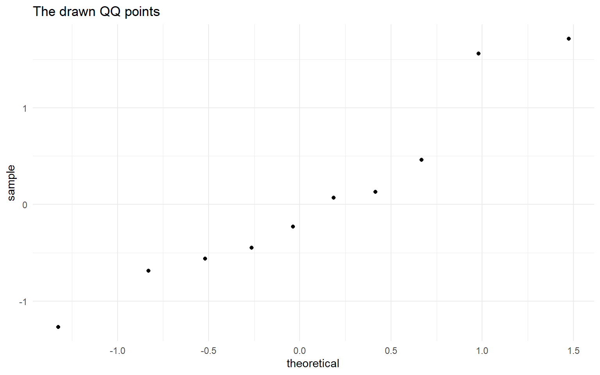
For each data point, a point is plotted in the QQ plot. The x-coordinate of the point corresponds to the theoretical quantile, and the y-coordinate corresponds to the observed quantile from the data, see Figure 4.12.
4.11.1.6 Perfect Normal Distribution
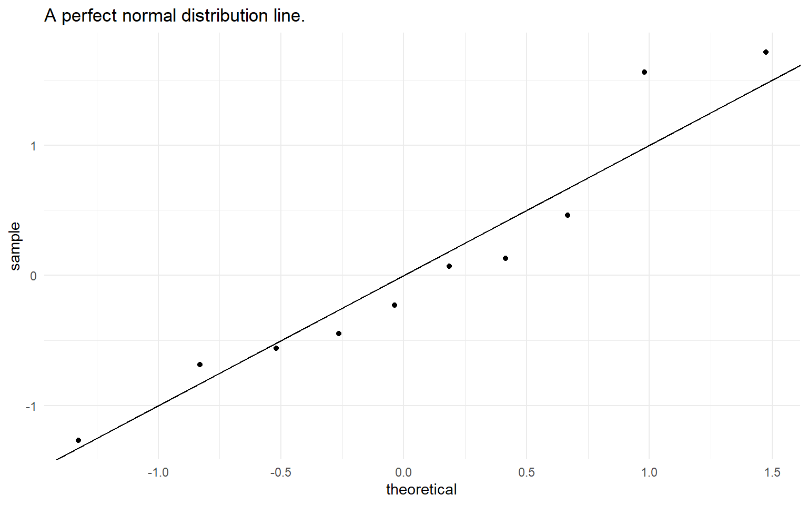
In the case of a perfect normal distribution, all the points would fall along a straight line at a 45-degree angle. If the data deviates from normality, the points may deviate from this line in specific ways, see Figure 4.13.
Deviations from the straight line suggest departures from the assumed distribution. For example, if points curve upward, it indicates that the data has heavier tails than a normal distribution. If points curve downward, it suggests lighter tails. S-shaped curves or other patterns can reveal additional information about the data’s distribution. In ?fig-qq-line the QQ-points are shown together with the respective QQ-line and a line of perfectly normal distributed points. Some deviations can be seen, but it is hard to judge, if the data is normally distributed or not.
4.11.1.7 QQ plot with probabilities

4.11.1.8 Confidence Interval
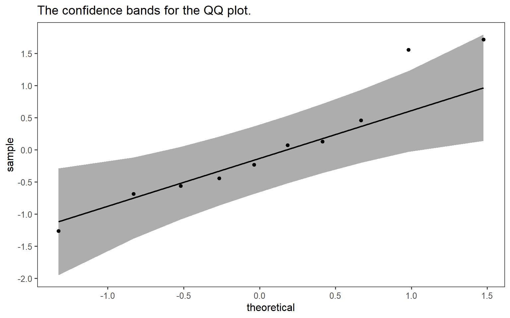
Because it is hard to judge from ?fig-qq-line if the points are normally distributed, it makes sense to get limits for normally distributed points. This is shown in Figure 4.15. The gray area depicts the (\(95\%\)) confidence bands for a normal distribution. All the points fall into the area, as well as the line. This shows, that the points are likely to be normally distributed.
4.11.1.9 Expanding to non-normal disitributions
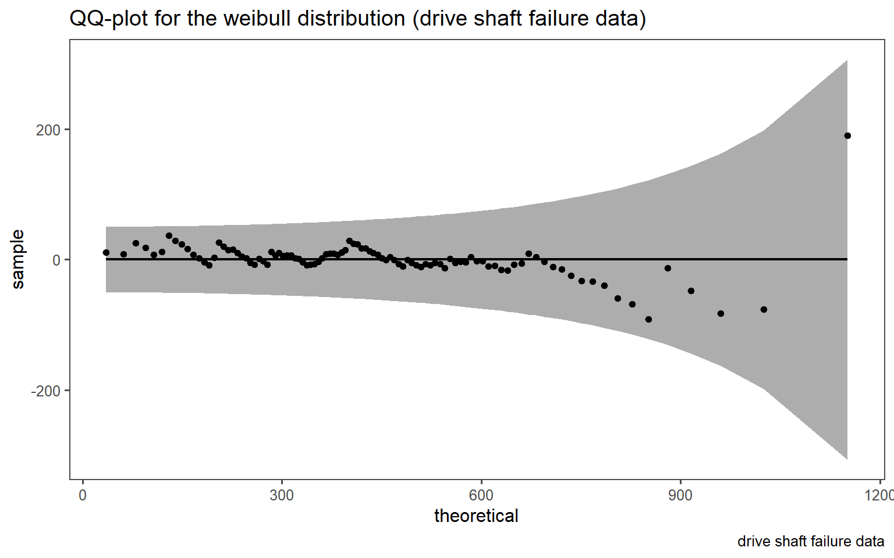
The QQ-plot can easily be extended to non-normal disitributions as well. This is shown in Figure 4.16. In Figure 4.16 (a) a classic QQ-plot for Figure 2.46 is shown. The same rules as before still apply, they are only extended to the weibull distribution. In Figure 4.16 (b) a detrended QQ-plot is shown in order to account for visual bias. It is of course known, that the data follows a weibull disitribution with a shape parameter \(\beta=2\) and a scale parameter \(\lambda = 500\), but such distributional parameters can also be estimated (Delignette-Muller and Dutang 2015).
4.11.1.10 The drive shaft exercise
The QQ plot method is extended to the drive shaft exercise in Figure 4.17. In each subplot the plot for the respective group is shown together with the QQ-points, the QQ-line and the respective confidence bands. The scaling for each plot is different to enhance visibility of every subplot. A line for the perfect normal distribution is also shown in solid linestyle. From group \(1 \ldots 4\) all points fall into the QQ confidence bands. Group05 differs however. The points from visible categories, which is a strong indicator, that the measurement system may be to inaccurate.
4.11.2 Quantitative Methods
4.11.2.1 The data

4.11.2.2 Kolmogorov Smirnov
Measures the distance from the Empirical Cumulative Density Function (ECDF) to the Cumulative Density Function (CDF).
H0: The data comes from the assumed distribution.
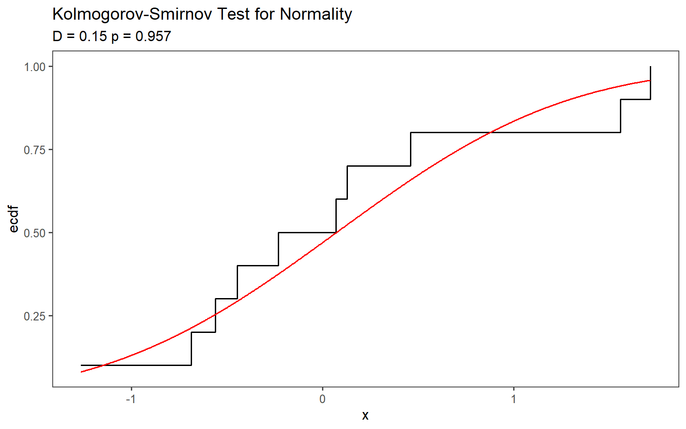
| statistic | p.value | method | alternative |
|---|---|---|---|
| 1 | 0 | Exact one-sample Kolmogorov-Smirnov test | two-sided |
4.11.2.3 Summary ks test
Pro
- Generally applicable (not only normal distribution).
- Easy to interpret (maximum deviation between empirical and theoretical distribution).
Con
- Conservative (low power with small samples).
- Sensitive to outliers.
The Kolmogorov-Smirnov test for normality, often referred to as the KS test, is a statistical test used to assess whether a dataset follows a normal distribution. It evaluates how closely the cumulative distribution function of the dataset matches the expected CDF of a normal distribution.
Null Hypothesis (H0): The null hypothesis in the KS test states that the sample data follows a normal distribution.
Alternative Hypothesis (Ha): The alternative hypothesis suggests that the sample data significantly deviates from a normal distribution.
Test Statistic (D): The KS test calculates a test statistic, denoted as D which measures the maximum vertical difference between the empirical CDF of the data and the theoretical CDF of a normal distribution. It quantifies how far the observed data diverges from the expected normal distribution. A visualization of the KS-test is shown in Figure 4.19. The red line denotes a perfect normal distribution, whereas the step function shows the empirical CDF of the data itself.
Critical Value: To assess the significance of D, a critical value is determined based on the sample size and the chosen significance level (\(\alpha\)). If D exceeds the critical value, it indicates that the dataset deviates significantly from a normal distribution.
Decision: If D is greater than the critical value, the null hypothesis is rejected, and it is concluded that the data is not normally distributed. If D is less than or equal to the critical value, there is not enough evidence to reject the null hypothesis, suggesting that the data may follow a normal distribution.
It is important to note that the KS test is sensitive to departures from normality in both tails of the distribution. There are other normality tests, like the Shapiro-Wilk test and Anderson-Darling test, which may be more suitable in certain situations. Researchers typically choose the most appropriate test based on the characteristics of their data and the assumptions they want to test.
4.11.2.4 Anderson Darling Test
Similar to ks test, but weighs the tails heavier.
H0: The data comes from the assumed distribution.
| statistic | p.value | method |
|---|---|---|
| 0.9818943 | 0.01073587 | Anderson-Darling normality test |
4.11.2.5 summary AD test
Pro:
- Generally applicable (not only normal distribution).
- asy to interpret (maximum deviation between empirical and theoretical distribution).
Cons:
- Conservative (low power with small samples).
- Sensitive to outliers.
4.11.2.6 Shapiro Wilk
- Special Case for the normal Distribution.
- used for \(n<5000\)
- Test Statistik ranges between \(0,\ldots,1\) with \(1\) being normally distributed.
H0: The data comes from the assumed distribution.
4.11.2.7 Mathemtatical Intuition
- evaluates whether a sample \(X_1,X_2,\ldots,X_n\) comes from a normal distribution by comparing the ordered sample values to the expected order.
Order Statistics: \(X_{(1)} \leq X_{(2)} \leq \ldots \leq X_{(n)}\)
Expected Normal Order: taken from \(\mathrm{N}(0,1)\) via \(m_i=\Phi^{-1}\frac{i}{n+1}\) with \(\Phi\) being the CDF
Weights (\(a_i\)): assign weights to \(a_i\) derived from the covariance matrix to account for the variability in different parts of the distribution (tails vs. center)
4.11.2.8 Connection to linear Regression
The Shapiro Wilk test can be framed as a regression problem:
- Dependent variable: The ordered sample \(X_{(1)} \leq X_{(2)} \leq \ldots \leq X_{(n)}\)
- Independent variable: The expected normal order statistics \(m_1,m_2,\ldots,m_n\)
- Weights: The inverse covariance \(\mathrm{V}^{-1}\) accounts for the non-independence of order statistics
The test statistic \(W\) is then the coefficient of determination \(r^2\) of this weighted regression.
\[W = r^2 = \frac{\text{Explained Variance}}{\text{Total Variance}}\]
4.11.2.9 The test
| statistic | p.value | method |
|---|---|---|
| 0.8705227 | 0.01200034 | Shapiro-Wilk normality test |
4.11.3 Comparison of test results
| statistic | p.value | method | alternative |
|---|---|---|---|
| 0.8705227 | 0.01200034 | Shapiro-Wilk normality test | NA |
| 0.9818943 | 0.01073587 | Anderson-Darling normality test | NA |
| 1.0000000 | 0.00000000 | Exact one-sample Kolmogorov-Smirnov test | two-sided |
4.11.4 sample size influence
| statistic | p.value | method | alternative |
|---|---|---|---|
| 0.8268107 | 1.231603e-17 | Shapiro-Wilk normality test | NA |
| 23.8428787 | 3.700000e-24 | Anderson-Darling normality test | NA |
| 0.5000000 | 1.435019e-65 | Asymptotic one-sample Kolmogorov-Smirnov test | two-sided |
4.12 Test 1 Variable

4.12.1 One Proportion Test
Scenario: A semiconductor manufacturer claims that their production line yields no more than \(2\%\) defective chips (i.e., the defect rate \(p_0=0.02\) ). To verify this, a quality engineer randomly samples 500 chips and finds 14 defectives. Is there sufficient evidence at \(\alpha=0.05\) to conclude that the defect rate exceeds the claimed \(2\%\)?
The one proportion test is used on categorical data with a binary outcome, such as success or failure. Its prerequisite is having a known or hypothesized population proportion that the sample proportion shall be compared to. This test helps determine if the sample proportion significantly differs from the population proportion, making it valuable for studies involving proportions and percentages.
4.12.1.1 Define the Hypothesis
This is a right-tailed test
4.12.1.2 The z-test for proportions
The underlying distribution for the z-test is the binomial distribution.
The test itself relies on the normal approximation to the binomial
\[X\sim\text{Binomial}(n,p)\]
\(n\): sample size
\(p\): true population proportion
Sample proportion: The sample proportion \(\hat{p} = \frac{X}{n}\) is the estimator for \(p\)
4.12.1.3 The Bridge to Normality
Acc. to the Central Limit Theorem (CLT) for large \(n\)
\[\begin{align} \hat{p} \sim N(p,\sqrt{\frac{p(1-p)}{n}}) \end{align}\]
- Mean: \(\hat{p}\) is the unbiased estimator of \(p\)
- SE: The \(sd\) of \(\hat{p}\) is \(\sqrt{\frac{p(1-p)}{n}}\)
- Normality Condition: \(np\geq10\) and \(n(1-p)\geq 10\)
4.12.1.4 The Z-Statistic
Under \(H_0\) assume \(p = p_0\). The Z-Statistic standardizes \(\hat{p}\) to
\[\begin{align} Z = \frac{\hat{p}-p_0}{\sqrt{\frac{p_0(1-p_0)}{n}}} \end{align}\]
4.12.1.5 Check Assumptions
. . .
- Independence: Chips are randomly sampled
. . .
- Sample Size: \(n \cdot p_0\geq 10\) and \(n(1-p_0)\geq10\)
. . .
- \(500 \times 0.02 = 10 \geq 10\)
. . .
- \(500 \times 0.98 = 490 \geq 10\)
4.12.1.6 Calculate Test Statistic
- \(\hat{p} = \frac{\text{defective}}{n} = \frac{14}{500} = 0.028\)
- \(p_0 = 0.02, n = 500\)
. . .
\[z = \frac{\hat{p}-p_0}{\sqrt{\frac{p_0(1-p_0)}{n}}} = \frac{0.028-0.02}{\sqrt{\frac{0.02\times 0.98}{500}}}\approx 1.28\]
4.12.1.7 Compute the p-value
\[P(Z>1.28) = 1-P(Z\leq 1.28)\approx 1-0.8997 = 0.1003\]

4.12.2 Chi2 goodness of fit test
Scenario: A semiconductor manufacturer produces wafers using three machines (A, B, C). The QA team suspects that defect rates differ across machines. They collect data over a week:
| Machine | Status | Count |
|---|---|---|
| A | Defective | 45 |
| A | Non-Defective | 505 |
| B | Defective | 30 |
| B | Non-Defective | 520 |
| C | Defective | 60 |
| C | Non-Defective | 490 |
4.12.2.1 Define the Hypotheses
4.12.2.2 Calculate Test Statistic
\[\chi^2 = \sum \frac{(O_{ij}-E_{ij})^2}{E_{ij}}\]
- \(O_{ij}\) observed frquency in cell \(i,j\) (Row \(i\), column \(j\))
- \(E_{ij}\) expected frquency in cell \(i,j\) under the \(H_0\)
4.12.2.3 Contingency tables
A contingency table (also called a cross-tabulation or two-way table) is a tabular representation of the relationship between two or more categorical variables. It displays the frequency distribution of observations across different categories, allowing us to examine associations, independence, or dependencies between variables.
4.12.2.4 Observed Contingency table
| Machine | Defective | Non-Defective | Row Total | |
|---|---|---|---|---|
| A | 45 | 505 | 550 | |
| B | 30 | 520 | 550 | |
| C | 60 | 490 | 550 | |
| sum | — | 135 | 1515 | 1650 |
4.12.2.5 Calculate Expected Frequencies
For each cell, calculate \(E_{ij}\):
- Machine A, Defective:
\[E_{A,Defective} = \frac{\text{Row Total}_A \times \text{Column Total}_{Defective}}{\text{Grand Total}} = \frac{550\times135}{1650} = 45\]
- Machine A, Non-Defective:
\[E_{A,Non-Defective} = \frac{\text{Row Total}_A \times \text{Column Total}_{Non Defective}}{\text{Grand Total}} = \frac{550\times1515}{1650} = 505\]
4.12.2.6 Expected table
| Machine | Defective | Non_Defective |
|---|---|---|
| A | 45 | 505 |
| B | 45 | 505 |
| C | 45 | 505 |
4.12.2.7 The test result
| statistic | p.value | method |
|---|---|---|
| 10.891 | 0.004 | Pearson's Chi-squared test |
The \(\chi^2\) goodness of Fit Test (gof) is applied on categorical data with expected frequencies. It is suitable for analyzing nominal or ordinal data. This test assesses whether there is a significant difference between the observed and expected frequencies in your dataset, making it useful for determining if the data fits an expected distribution.
4.12.3 One-sample t-test
The one-sample t-test is designed for continuous data when you have a known or hypothesized population mean that you want to compare your sample mean to. It relies on the assumption of normal distribution, making it applicable when assessing whether a sample’s mean differs significantly from a specified population mean.
The test can be applied in various settings. One is, to test if measured data comes from a population with a certain mean (for exampe a test against a specification). To show the application, the drive shaft data is employed. In Table 4.19 the per group summarised data of the dirve shaft data is shown.
| group | mean_diameter | sd_diameter |
|---|---|---|
| group01 | 12.015 | 0.111 |
| group02 | 12.364 | 0.189 |
| group03 | 13.002 | 0.102 |
| group04 | 11.486 | 0.094 |
| group05 | 12.001 | 0.026 |
One important prerequisite for the One sample t-test normally distributed data. For this, graphical and numerical methods have been introduced in previous chapters. First, a classic QQ-plot is created for every group (see Figure 4.22). From a first glance, the data appears to be normally distributed.
4.12.3.1 Normality Check
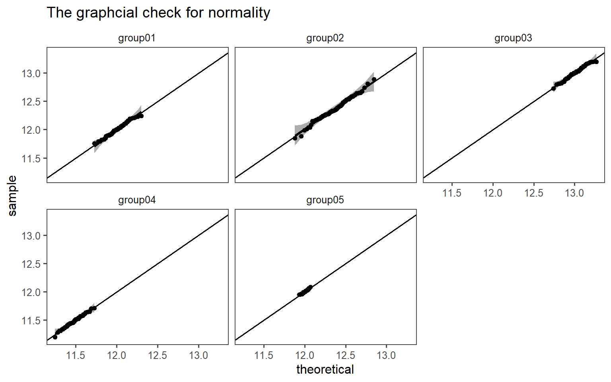
A more quantitative approach to tests for normality is shown in Table 4.20. Here, each group is tested with the KS-test for normality. H0 is accepted (the data is normal distributed) because the computed p-value is larger than the significance level (\(\alpha = 0.05\)).
4.12.3.2 Quantitative Normality Check
| group | statistic | p.value | method | alternative |
|---|---|---|---|---|
There is sufficient evidence to assume normal distributed data within each group. The next step is, to test if the data comes from a certain population mean (\(\mu_0\)). In this case, the population mean is the specification of the drive shaft at a diameter \(=12mm\).
4.12.3.3 Test result
| group | estimate | statistic | p.value | parameter | conf.low | conf.high | method | alternative |
|---|---|---|---|---|---|---|---|---|
4.12.4 One sample Wilcoxon test
Scenario:
A manufacturing plant produces bolts with a target diameter of 10.0 mm. The quality control team measures 7 randomly selected bolts and obtains the following diameters (in mm): 10.2, 9.8, 10.1, 9.9, 10.3, 9.7, 10.0
The team wants to determine if the median diameter differs from the target at a significance level of \(\alpha=0.05\) .
4.12.4.1 The data

4.12.4.2 The hypotheses
\[H_0: \text{Median diameter} = 10.00mm\]
\[H_a: \text{Median diameter} \neq 10.00mm\]
4.12.4.3 Signed Ranks
\(D_i = X_1 - 10.00\) and Rank \(|D_i|\)
| Bolt ID | Bolt diameter | \(D_i\) | \(|D_i|\) | ranked \(D_i\) | signed rank of \(D_i\) |
|---|---|---|---|---|---|
| 1 | 8.0 | -2.0 | 2.0 | 4 | -4 |
| 2 | 9.8 | -0.2 | 0.2 | 3 | -3 |
| 3 | 9.9 | -0.1 | 0.1 | 2 | -2 |
| 4 | 10.0 | 0.0 | 0.0 | 1 | 0 |
| 5 | 10.1 | 0.1 | 0.1 | 2 | 2 |
| 6 | 10.2 | 0.2 | 0.2 | 3 | 3 |
| 7 | 15.0 | 5.0 | 5.0 | 5 | 5 |
4.12.4.4 Sum of signed ranks
- Sum of positive ranks: 10
- Sum of negative ranks: 9
4.12.4.5 Decision at α Level
- Reject \(H_0\) if \(W \leq 2\)
- Here \(W = 9\) (use the smaller sum), so we fail to reject \(H_0\)
4.12.4.6 W?
The Wilcoxon signed-rank test statistic \(W\) is the smaller of the two rank sums. Under \(H_0\), the distribution of \(W\) is symmetric, and we can enumerate all possible outcomes.
Total number of outcomes: Each bolt can have a positive or negative outcome (ignoring \(0\)) \(2^7=128\).
Constructing the Distribution: For each combination, compute rank sum for \(\pm\) differences. The critical value is the largest \(W\) such that the cumulative probability \(P(W\leq w)\leq\alpha/2\) (two tailed test)
For \(n = 7\) the cumulative probabilities for \(W\) are precomputed in tables.
4.12.4.7 W value at significance level 5% and n = 7
H0: The median of differences is \(0\) (or a certain value like \(10.00mm\))
Possible ranks of differences:
For \(n = 7\) the ranks of the absolute differences are always \(1,2,\ldots,7\) (independent of data, because for \(H_0\) all sign combinations are of interest)
\[W_{max} = \sum_{k=1}^7 k = 28\]
All possible sign combinations: \(2^7 = 128\). Every combination is one possible realization of \(W\)
4.12.4.8 Calculation of PMF
- \(W = 0\): all differences are negative
- \(W = 1\): exactly the difference with rank 1 is positive (\(7\) combinations, because every difference of the \(7\) could be the one with rank 1)
- \(W = 2\):
- the difference with rank \(2\) is positive (and all others are negative) or
- the differences with rank \(1\) and rank \(2\) are positive (\(7\) combinations)
4.12.4.9 table for \(n = 7\)
| W | frequency | cumulative probability |
|---|---|---|
| 0 | 0.0078125 | 0.0078125 |
| 1 | 0.0078125 | 0.0156250 |
| 2 | 0.0156250 | 0.0312500 |
| 3 | 0.0156250 | 0.0468750 |
| 4 | 0.0156250 | 0.0625000 |
| 5 | 0.0234375 | 0.0859375 |
| 6 | 0.0234375 | 0.1093750 |
| 7 | 0.0468750 | 0.1562500 |
| 8 | 0.0312500 | 0.1875000 |
| 9 | 0.0546875 | 0.2421875 |
| 10 | 0.0546875 | 0.2968750 |
| 11 | 0.0625000 | 0.3593750 |
| 12 | 0.0625000 | 0.4218750 |
| 13 | 0.0703125 | 0.4921875 |
| 14 | 0.0781250 | 0.5703125 |
| W | frequency | cumulative probability |
|---|---|---|
| 15 | 0.0390625 | 0.6093750 |
| 16 | 0.0625000 | 0.6718750 |
| 17 | 0.0468750 | 0.7187500 |
| 18 | 0.0546875 | 0.7734375 |
| 19 | 0.0390625 | 0.8125000 |
| 20 | 0.0468750 | 0.8593750 |
| 21 | 0.0468750 | 0.9062500 |
| 22 | 0.0234375 | 0.9296875 |
| 23 | 0.0234375 | 0.9531250 |
| 24 | 0.0156250 | 0.9687500 |
| 25 | 0.0156250 | 0.9843750 |
| 26 | 0.0000000 | 0.9843750 |
| 27 | 0.0078125 | 0.9921875 |
| 28 | 0.0078125 | 1.0000000 |
4.12.4.10 CDF for \(n = 7\)

4.12.4.11 Estimation of W for small n
| critical value for the Wilcoxon-signed-rank-test (two-sided, α=0.05) | ||
| for small sample sizes (n ≤ 20) | ||
| sample size (n) | critical value (W, two-sided, α=0.05) | Interpretation (reject H₀ if... |
|---|---|---|
| 5 | 0 | W ≤ 0 |
| 6 | 0 | W ≤ 0 |
| 7 | 2 | W ≤ 2 |
| 8 | 3 | W ≤ 3 |
| 9 | 5 | W ≤ 5 |
| 10 | 8 | W ≤ 8 |
| 11 | 10 | W ≤ 10 |
| 12 | 13 | W ≤ 13 |
| critical value for the Wilcoxon-signed-rank-test (two-sided, α=0.05) | ||
| for small sample sizes (n ≤ 20) | ||
| sample size (n) | critical value (W, two-sided, α=0.05) | Interpretation (reject H₀ if... |
|---|---|---|
| 13 | 17 | W ≤ 17 |
| 14 | 21 | W ≤ 21 |
| 15 | 25 | W ≤ 25 |
| 16 | 30 | W ≤ 30 |
| 17 | 35 | W ≤ 35 |
| 18 | 41 | W ≤ 41 |
| 19 | 47 | W ≤ 47 |
| 20 | 53 | W ≤ 53 |
4.12.4.12 The Wilcox PMF

4.12.4.13 The Wilcox cumulative probabilities

4.13 Test 2 Variable (Qualitative or Quantitative)
4.13.1 Chi2 test of independence
This test is appropriate when you have two categorical variables, and you want to determine if there is an association between them. It is useful for assessing whether the two variables are dependent or independent of each other.
In the context of the drive shaft production the example assumes a dataset with categorical variables like “Defects” (Yes/No) and “Operator” (Operator A/B).
4.13.1.1 Sezenario
A manufacturing plant produces three types of components (A, B, C) using two different assembly lines (Line 1 and Line 2). The quality control team suspects that the defect rates may differ between the two lines. They collect data over a week to test whether component type and defect occurrence are independent of the assembly line used.
4.13.1.2 Hypotheses
H0: Component type and defect occurrence are independent of the assembly line (no association).
Ha: Component type and defect occurrence are dependent on the assembly line (association exists).
\[H_0: P(\text{Defect}|Line) = P(\text{Defect})\]
4.13.1.3 The data
| Component | Line1_Defect | Line1_NoDefect | Line2_Defect | Line2_NoDefect |
|---|---|---|---|---|
| A | 12 | 188 | 20 | 180 |
| B | 8 | 242 | 15 | 235 |
| C | 25 | 175 | 10 | 240 |
Tipp: Revisit \(\chi^2\) goodness of fit.
4.13.1.4 The test - Component A
| statistic | p.value | parameter | method |
|---|---|---|---|
| 0 | 1 | 1 | Pearson's Chi-squared test |
4.13.1.5 The test - Line vs. Defect Status (Ignoring Component)
| statistic | p.value | parameter | method |
|---|---|---|---|
| 0 | 1 | 1 | Pearson's Chi-squared test |
4.13.1.6 Visualization

4.13.2 Correlation

Correlation refers to a statistical measure that describes the relationship between two variables. It indicates the extent to which changes in one variable are associated with changes in another.
Correlation is measured on a scale from -1 to 1:
A correlation of 1 implies a perfect positive relationship, where an increase in one variable corresponds to a proportional increase in the other.
A correlation of -1 implies a perfect negative relationship, where an increase in one variable corresponds to a proportional decrease in the other.
A correlation close to 0 suggests a weak or no relationship between the variables.
Correlation doesn’t imply causation; it only indicates that two variables change together but doesn’t determine if one causes the change in the other.
4.13.3 Pearson Corrrelation
The pearson correlation \(R\) or \(r\) coefficient is a normalized version of the covariance.
4.13.3.1 Covariance
Covariance is a measure of joint variability.
Covariance is a generalized formulation of the variance.
\[\begin{align} \mathrm{Cov}(X,Y) = \frac{1}{n}\sum{(X_i - \bar{X})(Y_i - \bar{Y})} \end{align}\]
4.13.3.2 Example
| Temperature in C | Rod Length in mm |
|---|---|
| 20 | 100.2 |
| 22 | 100.5 |
| 24 | 100.9 |
| 26 | 101.3 |
| 28 | 101.6 |
4.13.3.3 Computing means
\[\begin{align} \bar{X} = \frac{20+22+24+26+28}{5} = 24 \end{align}\]
\[\begin{align} \bar{X} = \frac{100.2+100.5+100.9+101.3+101.6}{5} = 100.9 \end{align}\]
4.13.3.4 Computing covariance
| Temperature in C | Rod Length in mm | $X_i - \bar{X}$ | $Y_i - \bar{Y}$ | $(X_i - \bar{X}) \cdot (Y_i - \bar{Y})$ |
|---|---|---|---|---|
| 20 | 100.2 | -4 | -0.7 | 2.8 |
| 22 | 100.5 | -2 | -0.4 | 0.8 |
| 24 | 100.9 | 0 | 0.0 | 0.0 |
| 26 | 101.3 | 2 | 0.4 | 0.8 |
| 28 | 101.6 | 4 | 0.7 | 2.8 |
4.13.3.5 Sum the products
\[\begin{align} \sum(X_i - \bar{X})(Y_i - \bar{Y}) = 2.8 + 0.8 + 0 + 0.8 + 2.8 = 7.2 \end{align}\]
Compute Covariance
\[\begin{align} \mathrm{Cov}(X,Y) = \frac{7.2}{5} = 1.44 \end{align}\]
4.13.3.6 Interpretation:
- Covariance \(= 1.44\;°C\cdot mm\)
- It’s positive, meaning:
- When the machine runs hotter, the rods are longer (thermal expansion)
- It’s not standardized
- The number \(1.44\) is not “large” or “small” until compared with variance or a correlation is computed
4.13.3.7 detailed Interpretation
- \((X_i-\bar{X}) \rightarrow\) How different is this temperature from average?
- \((Y_i-\bar{Y}) \rightarrow\) How different is this rod length from average?
- Multiply them:
- Positive \(x\) Positive \(\rightarrow\) rods are longer at higher temp \(\rightarrow\) \(+\) contribution
- Negative \(x\) Negative \(\rightarrow\) rods are shorter at lower temp \(\rightarrow\) \(+\) contribution
- Different signs \(\rightarrow\) one high, one low \(\rightarrow\) \(-\) contribution
4.13.3.8 Correlation equation
\[\begin{align} R = \frac{\mathrm{Cov}(X,Y)}{\sigma_x \sigma_y} \end{align}\]
- Covariance is sensitive to scale (\(mm\) vs. \(cm\))
- Pearson correlation removes units, allowing for meaningful comparisons across datasets
4.13.3.9 drive shaft data
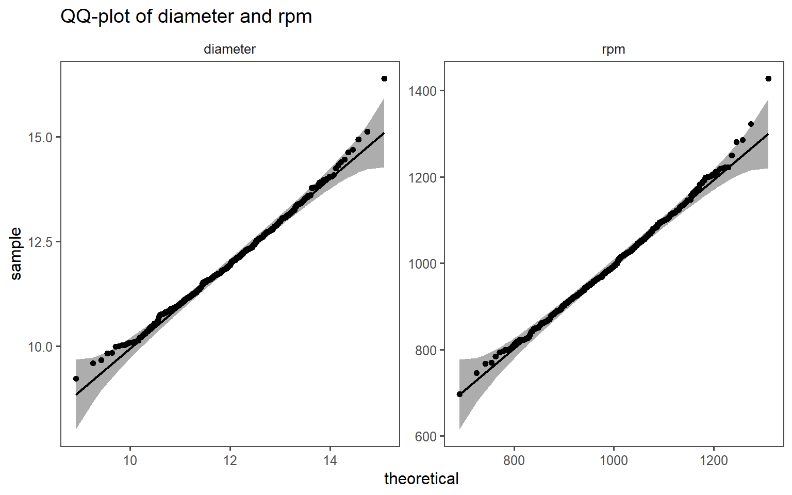
We have data on the the diameter vs. rpm and want to know, if there is a correlation between the two variables.
4.13.3.10 The correlation
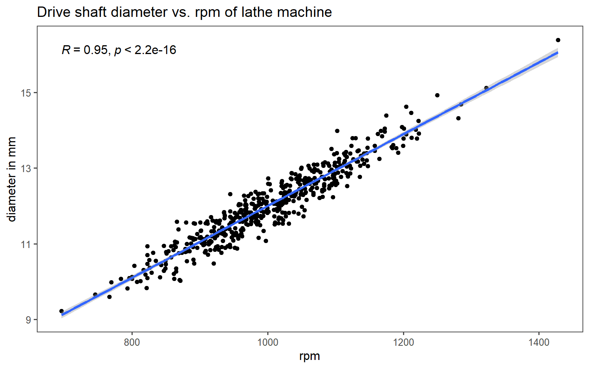
4.13.3.11 Testing and computing it
Pearson's product-moment correlation
data: drive_shaft_rpm_dia$rpm and drive_shaft_rpm_dia$diameter
t = 67.895, df = 498, p-value < 2.2e-16
alternative hypothesis: true correlation is not equal to 0
95 percent confidence interval:
0.9406732 0.9578924
sample estimates:
cor
0.95 4.13.4 Pearson correlation coefficient summary
\(2\) continuous variables, measure the strength and direction of their linear relationship: Pearson correlation (Pearson 1895)
normally distributed data
\[\begin{align} R = \frac{\sum_{i = 1}^{n}(x_i - \bar{x}) \times (y_i - \bar{y})}{\sqrt{\sum_{i=1}^{n}(x_i-\bar{x})^2}\times \sum_{i=1}^{n}(y_i-\bar{y})^2} \label{pearcorr} \end{align}\]
4.13.5 Spearman Correlation
Spearman (Spearman 1904) correlation is a non-parametric alternative to Pearson correlation. It is used when the data is not normally distributed or when the relationship between variables is monotonic but not necessarily linear.
\[\begin{align} \rho = 1 - \frac{6 \sum d_i^2}{n(n^2 - 1)} \label{spearcorr} \end{align}\]
In ?fig-drive-shaft-corr-spear the example data for a drive shaft production is shown. The Production_Time and the Defects seem to form a relationship, but the data does not appear to be normally distributed. This can also be seen in the QQ-plots of both variables in ?fig-drive-shaft-spear-qq.
The spearman correlation coefficient (\(\rho\)) is based on the pearson correlation, but applied to ranked data
4.13.5.1 data with outliers
| Observation | Temperature in C | Rod Length in mm | Comment |
|---|---|---|---|
| 1 | 20 | 100.2 | normal |
| 2 | 22 | 100.4 | normal |
| 3 | 24 | 100.7 | normal |
| 4 | 26 | 101.0 | normal |
| 5 | 28 | 101.3 | normal |
| 6 | 30 | 110.0 | steep increase |
| 7 | 32 | 120.0 | very steep |
| 8 | 34 | 130.0 | extreme |
4.13.5.2 The ranks of the data
| Obersvation | Temperature in C | Rod Length in mm | Comment | Rank $X$ | Rank $Y$ | $d = R_X-R_Y$ | $d^2$ |
|---|---|---|---|---|---|---|---|
| 1 | 20 | 100.2 | normal | 1 | 1 | 0 | 0 |
| 2 | 22 | 100.4 | normal | 2 | 2 | 0 | 0 |
| 3 | 24 | 100.7 | normal | 3 | 3 | 0 | 0 |
| 4 | 26 | 101.0 | normal | 4 | 4 | 0 | 0 |
| 5 | 28 | 101.3 | normal | 5 | 5 | 0 | 0 |
| 6 | 30 | 110.0 | steep increase | 6 | 6 | 0 | 0 |
| 7 | 32 | 120.0 | very steep | 7 | 7 | 0 | 0 |
| 8 | 34 | 130.0 | extreme | 8 | 8 | 0 | 0 |
4.13.5.3 The spearman rho
\[\begin{align} \rho = 1- \frac{6\sum{d^2}}{n(n^2-1)} = 1 - \frac{0}{8(64-1)} = 1 \end{align}\]
4.13.5.4 The data in a plot
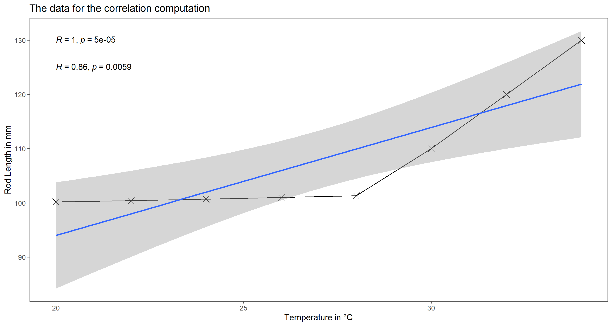
4.13.5.5 Background
The spearman \(\rho\) calculates the pearson correlation, but between the rank difference of the variables.
| Part | Meaning |
|---|---|
| \(\sum d_i^2\) | Total squared difference in ranks (rank disagreement) |
| \(6\) | Derived from algebraic simplification of Pearson’s r using rank variance |
| \(n(n^2 - 1)\) | Comes from variance of ranks and number of comparisons |
| \(1 - \text{fraction}\) | Ensures perfect agreement yields \(\rho = 1\); increasing \(d_i^2\) lowers \(\rho\) |
4.13.6 Comparison on outlier data
| estimate | statistic | p.value | parameter | conf.low | conf.high | method | alternative |
|---|---|---|---|---|---|---|---|
| 0.8620862 | 4.166991 | 5.898272e-03 | 6 | 0.4010414 | 0.9746625 | Pearson's product-moment correlation | two.sided |
| 1.0000000 | 0.000000 | 4.960317e-05 | NA | NA | NA | Spearman's rank correlation rho | two.sided |
4.13.7 Correlation - methodogical limits
While correlation analysis and summary statistics are certainly useful, one must always consider the raw data. The data taken from Davies, Locke, and D’Agostino McGowan (2022) showcases this. The summary statistics in Table 4.34 are practically the same, one would not suspect different underlying data. When the raw data is plotted though (Figure 4.33), it can be seen that the data appears to be highly non linear, forming different shapes as well as different categories etc.
Always check the raw data.
| dataset | mean_x | mean_y | std_dev_x | std_dev_y | corr_x_y |
|---|---|---|---|---|---|
4.13.8 Plot of the raw data
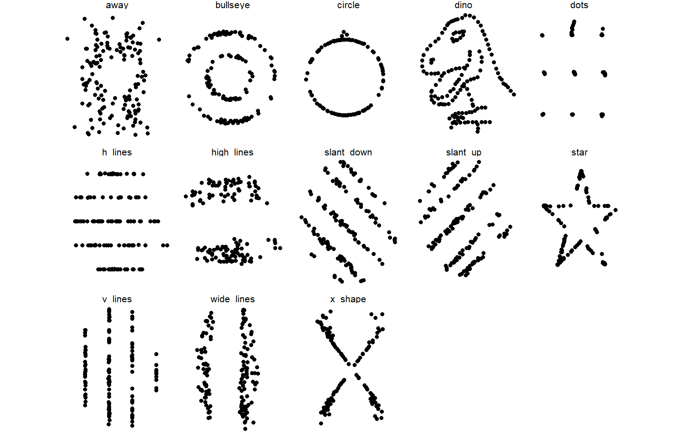
4.14 Test 2 Variables (2 Groups)

4.14.1 Test for equal variance (homoscedasticity)
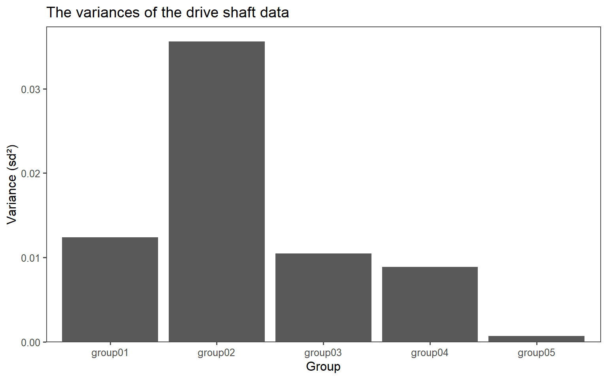
Tests for equal variances, also known as tests for homoscedasticity, are used to determine if the variances of two or more groups or samples are equal. Equal variances are an assumption in various statistical tests, such as the t-test and analysis of variance (ANOVA). When the variances are not equal, it can affect the validity of these tests. Two common tests for equal variances are:
Certainly, here are bullet points outlining the null hypothesis, prerequisites, and decisions for each of the three tests:
4.14.1.1 F-Test (Hahs-Vaughn and Lomax 2013)
- Null Hypothesis: The variances of the different groups or samples are equal.
- Prerequisites:
- Independence
- Normality
- Number of groups \(= 2\)
F test to compare two variances
data: ds_wide$group01 and ds_wide$group03
F = 1.1817, num df = 99, denom df = 99, p-value = 0.4076
alternative hypothesis: true ratio of variances is not equal to 1
95 percent confidence interval:
0.7951211 1.7563357
sample estimates:
ratio of variances
1.181736 4.14.1.2 Bartlett Test (Bartlett 1937)
- Null Hypothesis: The variances of the different groups or samples are equal.
- Prerequisites:
- Independence
- Normality
- Number of groups \(> 2\)
Bartlett test of homogeneity of variances
data: diameter by group
Bartlett's K-squared = 275.61, df = 4, p-value < 2.2e-164.14.1.3 Levene Test (Olkin June)
- Null Hypothesis: The variances of the different groups or samples are equal.
- Prerequisites:
- Independence
- Number of groups \(> 2\)
Levene's Test for Homogeneity of Variance (center = median)
Df F value Pr(>F)
group 4 38.893 < 2.2e-16 ***
495
---
Signif. codes: 0 '***' 0.001 '**' 0.01 '*' 0.05 '.' 0.1 ' ' 14.14.2 t-test for independent samples
The independent samples t-test is applied when you have continuous data from two independent groups. It evaluates whether there is a significant difference in means between these groups, assuming a normal distribution of the data.
4.14.2.1 Prerequisites
- Null Hypothesis: The means of the two samples are equal.
- Prerequisites:
- Independence
- Normal Distribution
- Number of groups \(=2\)
- equal Variances of the groups
4.14.2.2 Hypotheses
H0: \(\mu_1 = \mu_2\) (two tailed)
Ha: \(\mu_1 > \mu_2\) or \(\mu_1 < \mu_2\) (one-tailed)
4.14.2.3 One sided test

4.14.2.4 Two sided test

4.14.2.5 The test statistic
The t-statistic quantifies how far the observed difference in means (\(\bar{x_1}-\bar{x_2}\)) is from H0 in units of standard error.
\[\begin{align} t = \frac{\text{Observed Difference}}{\text{Standard Error of the Difference}} = \frac{\bar{x_1}-\bar{x_2}}{SE_{\bar{x_1}-\bar{x_2}}} \end{align}\]
Where the standard error depends on:
Sample Sizes (\(n_1,n_2\))
Sample variances (\(sd_1^2,sd_2^2\))
Whether the sample variances are equal (pooled variance) or not (Welch’s t-test)
4.14.2.6 Standard error for equal variances
\[\begin{align} SE_{pooled} &= \sqrt{sd_p^2(\frac{1}{n_1}+\frac{1}{n_2})} \\ sd_p^2 &= \frac{(n_1-1)sd_1^2+(n_2-1)sd_2^2}{n_1+n_2-2} \end{align}\]
4.14.2.7 Variances
First, the variances are compared in order to check if they are equal using the F-Test (as described in Section 4.14.1.1).
F test to compare two variances
data: group01 %>% pull("diameter") and group03 %>% pull("diameter")
F = 1.1817, num df = 99, denom df = 99, p-value = 0.4076
alternative hypothesis: true ratio of variances is not equal to 1
95 percent confidence interval:
0.7951211 1.7563357
sample estimates:
ratio of variances
1.181736 With \(p>\alpha = 0.05\) the \(H_0\) is accepted, the variances are equal.
4.14.2.8 Normality
The next step is to check the data for normality using the KS-test (as described in Section 4.11.2).
Asymptotic one-sample Kolmogorov-Smirnov test
data: group01 %>% pull("diameter")
D = 0.048142, p-value = 0.9746
alternative hypothesis: two-sided
Asymptotic one-sample Kolmogorov-Smirnov test
data: group03 %>% pull("diameter")
D = 0.074644, p-value = 0.6332
alternative hypothesis: two-sidedWith \(p>\alpha = 0.05\) the \(H_0\) is accepted, the data seems to be normally distributed.
4.14.2.9 Visualization

4.14.2.10 Testing
The formal test is then carried out. With \(p<\alpha=0.05\) \(H_0\) is rejected, the data comes from populations with different means.
Two Sample t-test
data: group01 %>% pull(diameter) and group03 %>% pull(diameter)
t = -65.167, df = 198, p-value < 2.2e-16
alternative hypothesis: true difference in means is not equal to 0
95 percent confidence interval:
-1.0164554 -0.9567446
sample estimates:
mean of x mean of y
12.0155 13.0021 4.14.3 Welch t-test for independent samples
Similar to the independent samples t-test, the Welch t-test is used for continuous data with two independent groups (WELCH 1947). However, it is employed when there are unequal variances between the groups, relaxing the assumption of equal variances in the standard t-test.
4.14.3.1 Prerequisites
- Null Hypothesis: The means of the two samples are equal.
- Prerequisites:
- Independence
- Normal Distribution
- Number of groups \(=2\)
4.14.3.2 Variance Check
First, the variances are compared in order to check if they are equal using the F-Test (as described in Section 4.14.1.1).
F test to compare two variances
data: group01 %>% pull("diameter") and group02 %>% pull("diameter")
F = 0.34904, num df = 99, denom df = 99, p-value = 3.223e-07
alternative hypothesis: true ratio of variances is not equal to 1
95 percent confidence interval:
0.2348504 0.5187589
sample estimates:
ratio of variances
0.3490426 With \(p<\alpha = 0.05\) \(H_0\) is rejected and \(H_a\) is accepted. The variances are different.
4.14.3.3 Normality Check
Using the KS-test (see Section 4.11.2) the data is checked for normality.
Asymptotic one-sample Kolmogorov-Smirnov test
data: group01 %>% pull("diameter")
D = 0.048142, p-value = 0.9746
alternative hypothesis: two-sided
Asymptotic one-sample Kolmogorov-Smirnov test
data: group02 %>% pull("diameter")
D = 0.067403, p-value = 0.7539
alternative hypothesis: two-sidedWith \(p>\alpha = 0.05\) \(H_0\) is accepted, the data seems to be normally distributed.
4.14.3.4 The data
4.14.3.5 Calculation for unequal variances
The SE of the variances for unequal variances is calculated:
\[\begin{align} SE_{Welch} = \sqrt{\frac{sd_1^2}{n_1}+\frac{sd_2^2}{n_2}} \end{align}\]
4.14.3.6 The test
Then, the formal test is carried out.
Welch Two Sample t-test
data: group01 %>% pull(diameter) and group02 %>% pull(diameter)
t = -15.887, df = 160.61, p-value < 2.2e-16
alternative hypothesis: true difference in means is not equal to 0
95 percent confidence interval:
-0.3912592 -0.3047408
sample estimates:
mean of x mean of y
12.0155 12.3635 With \(p<\alpha = 0.05\) we reject \(H_0\), the data seems to be coming from different population means, even though the variances are overlapping (and different).
4.14.4 Mann-Whitney U test
For non-normally distributed data or small sample sizes, the Mann-Whitney U test serves as a non-parametric alternative to the independent samples t-test (Mann and Whitney 1947). It assesses whether there is a significant difference in medians between two independent groups.
4.14.4.1 Prerequisites
Based on the Wilcoxon rank sum test (see Section 4.12.4).
- Null Hypothesis: The medians of the two samples are equal.
- Prerequisites:
- Independence
- no specific distribution (non-parametric)
- Number of groups \(=2\)
4.14.4.2 Hypotheses
H0: The two groups have equal medians
Ha: The two groups have unequal medians
4.14.4.3 The data
4.14.4.4 Check for Normality
This time a graphical method to check for normality is employed (QQ-plot, see Section 4.11.1). From the Figure 4.41 it is pretty clear, that the data is not normally distributed. Furthermore, the variances seem to be unequal as well.
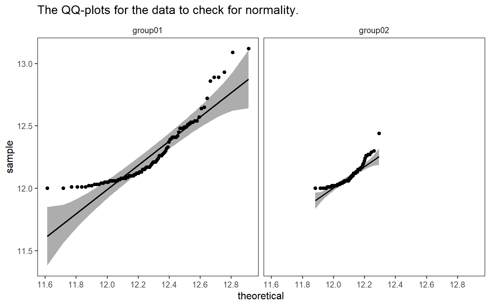
4.14.4.5 The test
Then, the formal test is carried out. With \(p<\alpha = 0.05\) \(H_0\) is rejected, the true location shift is not equal to \(0\).
Wilcoxon rank sum test with continuity correction
data: diameter by group
W = 7396, p-value = 4.642e-09
alternative hypothesis: true location shift is not equal to 0Cohen's d | 95% CI
------------------------
0.93 | [0.63, 1.22]
- Estimated using pooled SD.4.14.5 t-test for paired samples
The paired samples t-test is suitable when you have continuous data from two related groups or repeated measures. It helps determine if there is a significant difference in means between the related groups, assuming normally distributed data.
4.14.5.1 Prerequisites
- Null Hypothesis: True mean difference is not equal to 0.
- Prerequisites:
- Paired Data
- Normal Distribution
- equal variances
- Number of groups \(=2\)
4.14.5.2 Special characteristics
The paired t-test focuses on the differences between paired observations.
- (\(X_{1i},X_{2i}\)) may be the \(i\)th pair of observations (\(i = 1, \ldots, n\))
- Differences: \(D_i = X_{1i}-X_{2i}\)
It is then evaluated whether the mean differences (\(\mu_D\)) is zero.
4.14.5.3 Hypotheses
H0: \(\mu_D = 0\)
Ha: \(\mu_D \neq 0\)
with the test statistic being
\[\begin{align} t = \frac{\bar{D}}{sd_D/\sqrt{n}} \end{align}\]
4.14.5.4 Variances
Using the F-Test, the variances are compared.
F test to compare two variances
data: diameter by timepoint
F = 1, num df = 9, denom df = 9, p-value = 1
alternative hypothesis: true ratio of variances is not equal to 1
95 percent confidence interval:
0.2483859 4.0259942
sample estimates:
ratio of variances
1 With \(p>\alpha = 0.05\) \(H_0\) is accepted, the variances are equal.
4.14.5.5 Normality
Using a QQ-plot the data is checked for normality.

4.14.5.6 Visualization
4.14.5.7 The test
The formal test is then carried out.
# A tibble: 1 × 8
.y. group1 group2 n1 n2 statistic df p
* <chr> <chr> <chr> <int> <int> <dbl> <dbl> <dbl>
1 diameter t0 t1 10 10 -13.4 9 0.000000296With \(p<\alpha = 0.05\) \(H_0\) is rejected, the treatment changed the properties of the product.
4.14.6 Wilcoxon signed rank test
For non-normally distributed data or situations involving paired samples, the Wilcoxon signed rank test is a non-parametric alternative to the paired samples t-test. It evaluates whether there is a significant difference in medians between the related groups.
4.14.6.1 Prerequisites
- Null Hypothesis: True mean difference is not equal to 0.
- Prerequisites:
- Paired Data
- Number of groups \(=2\)
4.14.6.2 Check for Normality

4.14.6.3 Special characteristic
- (\(X_{1i},X_{2i}\)) may be the \(i\)th pair of observations (\(i = 1, \ldots, n\))
- Differences: \(D_i = X_{1i}-X_{2i}\)
It is then evaluated whether the median differences is zero
4.14.6.4 The data

4.14.6.5 The test
# A tibble: 1 × 7
.y. group1 group2 n1 n2 statistic p
* <chr> <chr> <chr> <int> <int> <dbl> <dbl>
1 diameter t0 t1 20 20 25 0.001694.14.7 Exercise on paired samples
A manufacturing plant has 10 machines producing steel rods. After recalibration, the diameters of rods from each machine are measured again. The goal is to determine if the recalibration significantly changed the mean diameter.
4.14.7.1 The data
| before | after |
|---|---|
| 8.37 | 6.35 |
| 6.44 | 4.03 |
| 7.36 | 6.42 |
| 7.63 | 6.24 |
| 7.40 | 5.95 |
| 109.47 | 107.72 |
| 117.56 | 116.17 |
| 109.53 | 109.09 |
| 9.04 | 8.52 |
| 7.34 | 5.31 |
4.14.7.2 Your plan
How do we go on?
4.14.7.3 Solution: Differences
| before | after | D |
|---|---|---|
| 8.37 | 6.35 | 2.02 |
| 6.44 | 4.03 | 2.41 |
| 7.36 | 6.42 | 0.94 |
| 7.63 | 6.24 | 1.39 |
| 7.40 | 5.95 | 1.45 |
| 109.47 | 107.72 | 1.75 |
| 117.56 | 116.17 | 1.39 |
| 109.53 | 109.09 | 0.44 |
| 9.04 | 8.52 | 0.52 |
| 7.34 | 5.31 | 2.03 |
4.14.7.4 Solution: Check Normality of data

4.14.7.5 Solution: Check Normality of the differences

4.14.7.6 The test
| .y. | group1 | group2 | n1 | n2 | statistic | df | p | is_paired |
|---|---|---|---|---|---|---|---|---|
| diameter | after | before | 10 | 10 | -6.95806860 | 9.00000 | 6.63e-05 | yes |
| diameter | after | before | 10 | 10 | -0.06333031 | 17.99979 | 9.50e-01 | no |
4.15 Test 2 Variables (> 2 Groups)

4.15.1 Analysis of Variance (ANOVA) - Basic Idea
ANOVA’s ability to compare multiple groups or factors makes it widely applicable across diverse fields for analyzing variance and understanding relationships within data. In the context of engineering sciences the application of ANOVA include:
Experimental Design and Analysis: Engineers often conduct experiments to optimize processes, test materials, or evaluate designs. ANOVA aids in analyzing these experiments by assessing the effects of various factors (like temperature, pressure, or material composition) on the performance of systems or products. It helps identify significant factors and their interactions to improve engineering processes.
Product Testing and Reliability: Engineers use ANOVA to compare the performance of products manufactured under different conditions or using different materials. This analysis helps ensure product reliability by identifying which factors significantly impact product quality, durability, or functionality.
Process Control and Improvement: ANOVA plays a crucial role in quality control and process improvement within engineering. It helps identify variations in manufacturing processes, such as assessing the impact of machine settings or production methods on product quality. By understanding these variations, engineers can make informed decisions to optimize processes and minimize defects.
Supply Chain and Logistics: In engineering logistics and supply chain management, ANOVA aids in analyzing the performance of different suppliers or transportation methods. It helps assess variations in delivery times, costs, or product quality across various suppliers or logistical approaches.
Simulation and Modeling: In computational engineering, ANOVA is used to analyze the outputs of simulations or models. It helps understand the significance of different input variables on the output, enabling engineers to refine models and simulations for more accurate predictions.

Across such fields ANOVA is often used to:
Comparing Means: ANOVA is employed when comparing means between three or more groups. It assesses whether there are statistically significant differences among the means of these groups. For instance, in an experiment testing the effect of different fertilizers on plant growth, ANOVA can determine if there’s a significant difference in growth rates among the groups treated with various fertilizers.
Modeling Dependencies: ANOVA can be extended to model dependencies among variables in more complex designs. For instance, in factorial ANOVA, it’s used to study the interaction effects among multiple independent variables on a dependent variable. This allows researchers to understand how different factors might interact to influence an outcome.
Measurement System Analysis (MSA): ANOVA is integral in MSA to evaluate the variation contributed by different components of a measurement system. In assessing the reliability and consistency of measurement instruments or processes, ANOVA helps in dissecting the total variance into components attributed to equipment variation, operator variability, and measurement error.
As with statistical tests before, the applicability of the ANOVA depends on various factors.
4.15.1.1 Sum of squared error (SSE)
The sum of squared errors is a statistical measure used to assess the goodness of fit of a model to its data. It is calculated by squaring the differences between the observed values and the values predicted by the model for each data point, then summing up these squared differences. The SSE indicates the total variability or dispersion of the observed data points around the fitted regression line or model. Lower SSE values generally indicate a better fit of the model to the data.
\[\begin{align} SSE = \sum_{i=1}^{n} (y_i - \hat{y}_i)^2 \label{sse} \end{align}\]

4.15.1.2 Mean squared error (MSE)
The mean squared error is a measure used to assess the average squared difference between the predicted and actual values in a dataset. It is frequently employed in regression analysis to evaluate the accuracy of a predictive model. The MSE is calculated by taking the average of the squared differences between predicted values and observed values. A lower MSE indicates that the model’s predictions are closer to the actual values, reflecting better accuracy.
\[\begin{align} MSE = \frac{1}{n} \sum_{i=1}^{n} (y_i - \hat{y}_i)^2 \label{mse} \end{align}\]
4.15.2 One-way ANOVA
The one-way analysis of variance (ANOVA) is used for continuous data with three or more independent groups. It assesses whether there are significant differences in means among these groups, assuming a normal distribution.
4.15.2.1 Prerequisites
- Null Hypothesis: True mean difference is equal to 0.
- Prerequisites:
- equal variances
- Number of groups \(>2\)
- One response, one predictor variable
4.15.2.2 One-way AOVA - basic idea

4.15.2.3 Check Variances
The most important prerequisite for a One-way ANOVA are equal variances. Because there are more than two groups, the Bartlett test (as introduced in Section 4.14.1.2) is chosen (data is normally distributed).
Bartlett test of homogeneity of variances
data: diameter by group
Bartlett's K-squared = 275.61, df = 4, p-value < 2.2e-16Because \(p<\alpha = 0.05\) the variances are different.
4.15.2.4 Where are the variances equal?
4.15.2.5 More tests
Bartlett test of homogeneity of variances
data: diameter by group
Bartlett's K-squared = 2.7239, df = 2, p-value = 0.2562With \(p>\alpha=0.05\) \(H_0\) is accepted, the variances of group01, group02 and group03 are equal.
4.15.2.6 The whole game
Of course, many software package provide an automated way of performing a One-way ANOVA, but the first will be explained in detail. The general model for a One-way ANOVA is shown in \(\eqref{onewayanova}\).
\[\begin{align} Y \sim X + \epsilon \label{onewayanova} \end{align}\]
- \(H_0\): All population means are equal.
- \(H_a\): Not all population means are equal.
For a One-way ANOVA the predictor variable \(X\) is the mean (\(\bar{x}\)) of all datapoints \(x_i\).
First the SSE and the MSE is calculated for the complete model (\(H_a\) is true), see Table 4.38. The complete model means, that every mean, for every group is calculated and the \(SSE\) according to \(\eqref{sse}\) is calculated.
4.15.2.7 Complete Model
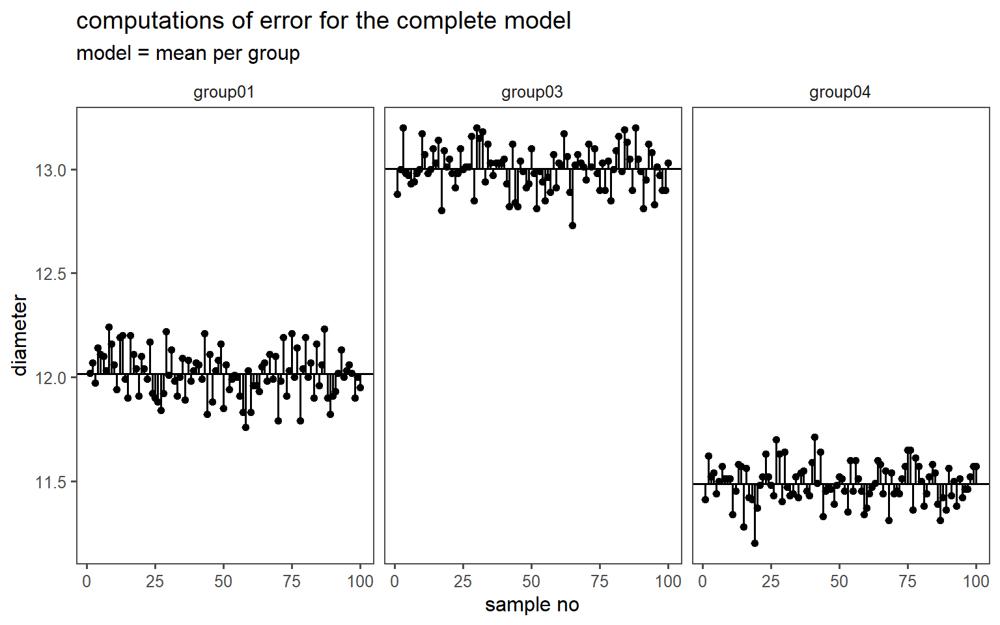
4.15.2.8 Reduced Model
4.15.2.9 SE and MSE
| sse | df | n | p | mse |
|---|---|---|---|---|
4.15.2.10 SE and MSE comparison
Then, the SSE and the MSE is calculated for the reduced model (\(H_0\) is true). In the reduced model, the mean is not calculated per group, the overall mean is calculated (results in Table 4.39).
| sse | df | n | p | mse |
|---|---|---|---|---|
4.15.2.11 Explained
The \(SSE\), \(df\) and \(MSE\) explained by the complete model are calculated:
\[\begin{align} SSE_{explained} &= SSE_{reduced}-SSE_{complete} = 118.36 \\ df_{explained} &= df_{reduced} - df_{complete} = 2 \\ MSE_{explained} &= \frac{SSE_{explained}}{df_{explained}} = 59.18 \end{align}\]
4.15.2.12 Ratio of Variances
The ratio of the variance (MSE) as explained by the complete model to the reduced model is then calculated. The probability of this statistic is afterwards calculated (if \(H_0\) is true).
[1] 2.762026e-236The probability of a F-statistic with \(pf = 5579.207\) is \(0\).
4.15.2.13 Crosscheck
A crosscheck with a automated solution (aov-function) yields the results shown in Table 4.40.
| term | df | sumsq | meansq | statistic | p.value |
|---|---|---|---|---|---|
4.15.2.14 Sanity Checks
Some sanity checks are of course required to ensure the validity of the results. First, the variance of the residuals must be equal along the groups (see Figure 4.52).
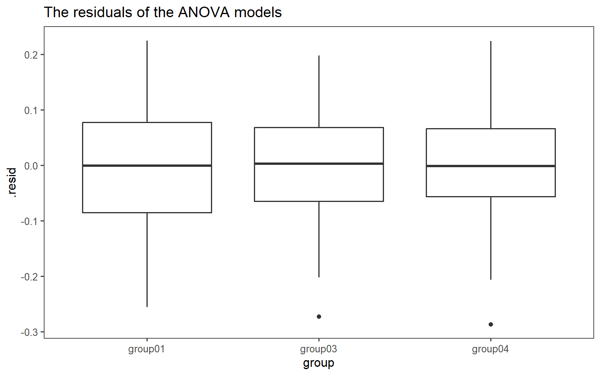
4.15.2.15 residuals
Also, the residuals from the model must be normally distributed (see Figure 4.53).
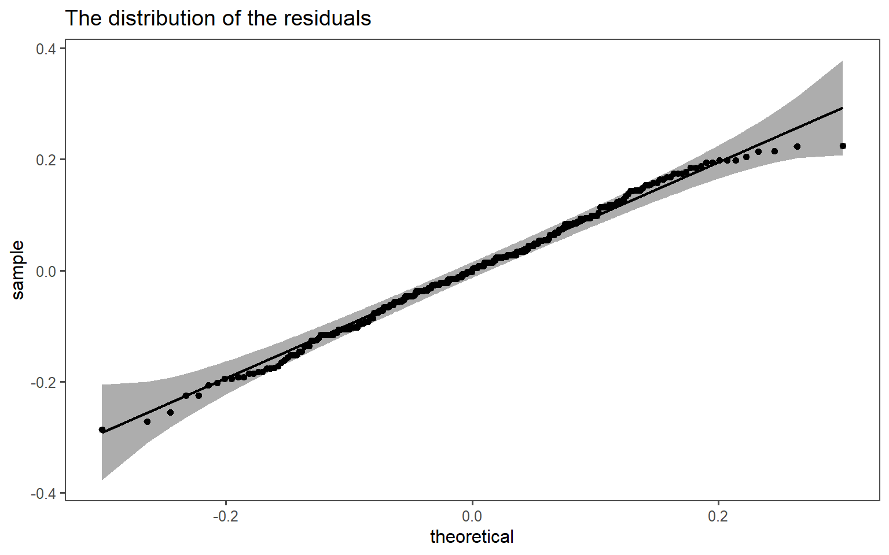
4.15.2.16 final conclusion
The model seems to be valid (equal variances of residuals, normal distributed residuals).
With \(p<\alpha = 0.05\) \(H_0\) can be rejected, the means come from different populations.
4.15.3 Welch ANOVA
Welch ANOVA: Similar to one-way ANOVA, the Welch ANOVA is employed when there are unequal variances between the groups being compared. It relaxes the assumption of equal variances, making it suitable for situations where variance heterogeneity exists.
4.15.3.1 Prerequisites
- Null Hypothesis: True mean difference is not equal to 0.
- Prerequisites:
- Number of groups \(>2\)
- One response, one predictor variable
4.15.3.2 Variance test
The Welch ANOVA drops the prerequisite of equal variances in groups. Because there are more than two groups, the Bartlett test (as introduced in Section 4.14.1.2) is chosen (data is normally distributed).
Bartlett test of homogeneity of variances
data: diameter by group
Bartlett's K-squared = 275.61, df = 4, p-value < 2.2e-16With \(p<\alpha = 0.05\) \(H_0\) can be rejected, the variances are not equal.
4.15.3.3 ANOVA table
The ANOVA table for the Welch ANOVA is shown in Table 4.41.
| num.df | den.df | statistic | p.value | method |
|---|---|---|---|---|
4.15.4 Kruskal Wallis
Kruskal-Wallis Test: When dealing with non-normally distributed data, the Kruskal-Wallis test is a non-parametric alternative to one-way ANOVA. It is used to evaluate whether there are significant differences in medians among three or more independent groups.
In this example the drive strength is measured using three-point bending. Three different methods are employed to increase the strength of the drive shaft.
4.15.4.1 Scenario

- Method A: baseline material
- Method B: different geometry
- Method C: different material
In Figure 4.55 the raw drive shaft strength data for Method A, B and C is shown. At first glance, the data does not appear to be normally distributed.
4.15.4.2 The data
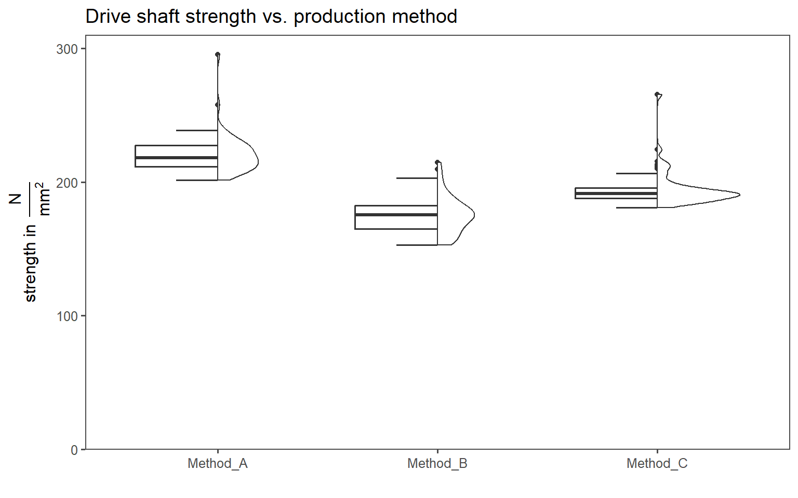
4.15.4.3 Check Disitribution
In Figure 4.56 the visual test for normal distribution is performed. The data does not appear to be normally distributed.
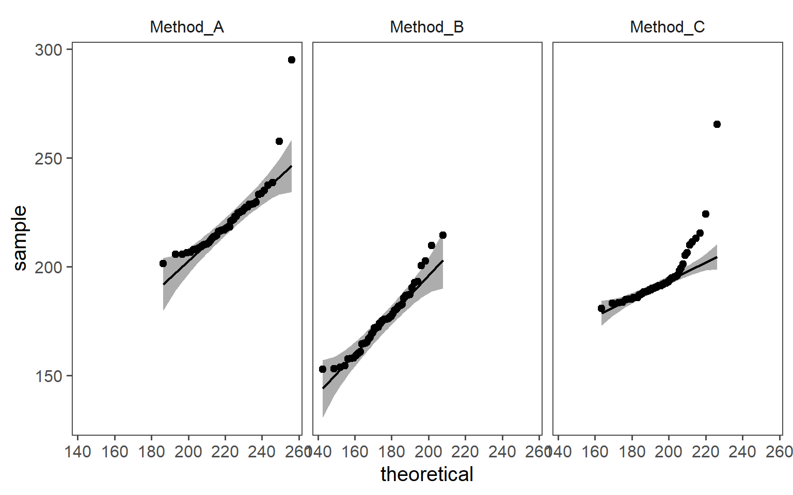
4.15.4.4 The test
The Kruskal-Wallis test is then carried out. With \(p< \alpha = 0.05\) it is shown, that the groups come from populations with different means. The next step is to find which of the groups are different using a post-hoc analysis.
Kruskal-Wallis rank sum test
data: strength by group
Kruskal-Wallis chi-squared = 107.65, df = 2, p-value < 2.2e-164.15.4.5 multiple tests
The Kruskal-Wallis Test (as the ANOVA) can only tell you, if there is a signifcant difference between the groups, not what groups are different. Post-hoc tests are able to determine such, but must be used with a correction for multiple testing (see (Tamhane 1977))
Pairwise comparisons using Wilcoxon rank sum test with continuity correction
data: kw_shaft_data$strength and kw_shaft_data$group
Method_A Method_B
Method_B < 2e-16 -
Method_C 6.8e-14 2.0e-10
P value adjustment method: bonferroni Because \(p<\alpha = 0.05\) it can be concluded, that all means are different from each other.
4.15.5 repeated measures ANOVA
Repeated Measures ANOVA: The repeated measures ANOVA is applicable when you have continuous data with multiple measurements within the same subjects or units over time. It is used to assess whether there are significant differences in means over the repeated measurements, under the assumptions of sphericity and normal distribution.
In this example, the diameter of \(n = 20\) drive shafts is measured after three different steps.
- Before Machining
- After Machining
- After Inspection
4.15.5.1 The data
4.15.5.2 Outlier detection
First, outliers are identified. There is no strict rule to identify outliers, in this case a classical measure is applied according to \(\eqref{outlierrule}\)
\[\begin{align} \text{outlier} &= \begin{cases} x_i & >Q3 + 1.5 \cdot IQR \\ x_i & <Q1 - 1.5 \cdot IQR \end{cases} \label{outlierrule} \end{align}\]
# A tibble: 1 × 5
timepoint Subject_ID diameter is.outlier is.extreme
<chr> <fct> <dbl> <lgl> <lgl>
1 After_Inspection 15 12.9 TRUE FALSE 4.15.5.3 Check Distributions
A check for normality is done employing the Shapiro-Wilk test (Shapiro and Wilk 1965).
| timepoint | variable | statistic | p |
|---|---|---|---|
4.15.5.4 Sphericity
The next step is to check the dataset for sphericity, meaning to compare the variance of the groups among each other in order to determine the equality thereof. For this the Mauchly Test for sphericity is employed (Mauchly 1940).
Effect W p p<.05
1 timepoint 0.927 0.524 With \(p>\alpha = 0.05\) \(H_0\) is accepted, the variances are equal. Otherwise sphericity corrections must be applied (Greenhouse and Geisser 1959).
The next step is to perform the repeated measures ANOVA, which yields the following results.
4.15.5.5 The test
| Effect | DFn | DFd | F | p | p<.05 | ges |
|---|---|---|---|---|---|---|
With \(p<\alpha = 0.05\) \(H_0\) is rejected, the different timepoints yield different diameters. Which groups are different is then determined using a post-hoc test, including a correction for the significance level (Bonferroni 1936).
In this case, the assumptions for a t-test are met, the pairwise t-test can be used.
4.15.5.6 p-value adjustment
| group1 | group2 | n1 | n2 | statistic | df | p | p.adj | signif |
|---|---|---|---|---|---|---|---|---|
with \(p<\alpha = 0.05\) \(H_0\) is rejected for the comparison Before_Machining - After_Machining and After_Inspection - Before_Machining. It can therefore be concluded that the machining has a significant influence on the diameter, whereas the inspection has none.
4.15.6 Friedman test
The Friedman test is a non-parametric alternative to repeated measures ANOVA (Friedman 1937). It is utilized when dealing with non-normally distributed data and multiple measurements within the same subjects. This test helps determine if there are significant differences in medians over the repeated measurements.
4.15.6.1 The test
The same data as for the repeated measures ANOVA will be used.
| .y. | n | statistic | df | p | method |
|---|---|---|---|---|---|
With \(p<\alpha = 0.05\) \(H_0\) is rejected, the timepoints play a vital role for the drive shaft parameter.
A quantile is a statistical concept used to divide a dataset into equal-sized subsets or intervals.↩︎